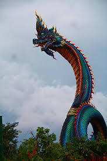
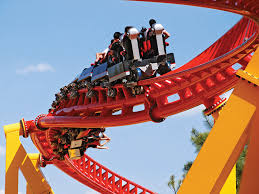
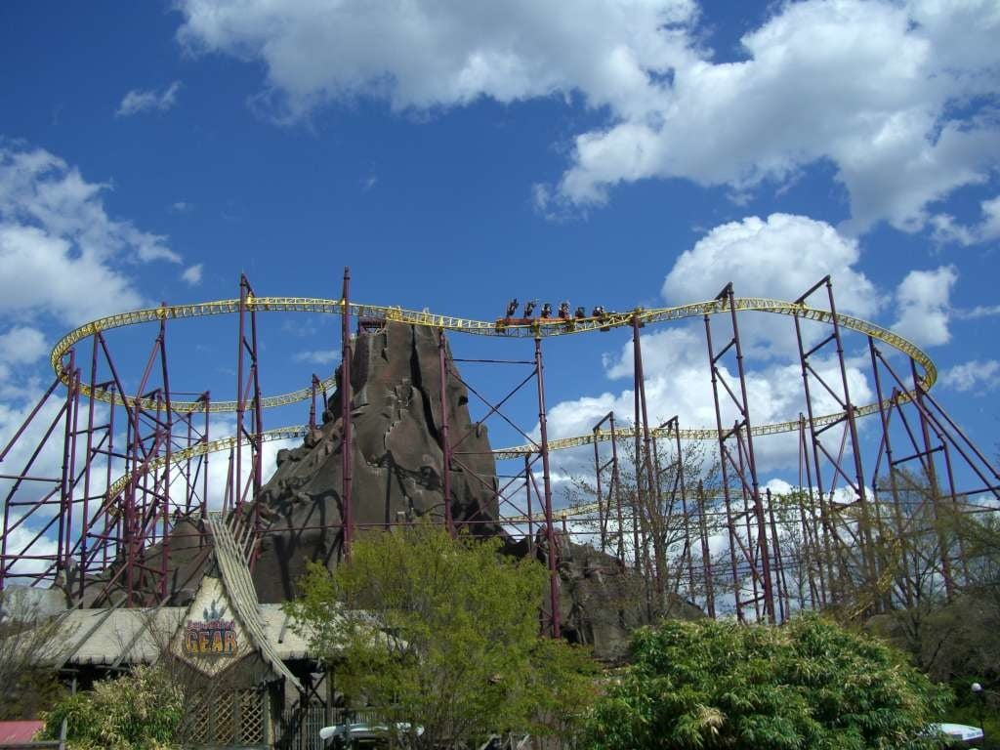
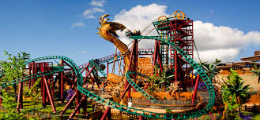
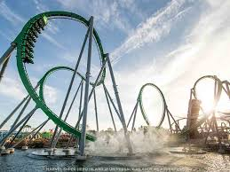
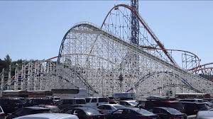

| Algunas atracciones |
Descripcion de las atracciones |
Fotos |
Valoracion |
| Il Viaggio del Tempo |
Una atracción en forma de cápsula donde los visitantes viajan a diferentes épocas históricas
con efectos holográficos y movimiento sincronizado. |
 |
4.9 ⭐ |
| Volo del Drago |
Una atracción suspendida que simula el vuelo sobre paisajes fantásticos con efectos de viento,
aromas y sonido envolvente. |
 |
4.1 ⭐ |
| Metropoli Cibernetica |
Un recorrido en balsas por rápidos y cascadas simuladas en un paisaje natural. |

|
3.9 ⭐ |
| Dimensione Parallela |
Una experiencia inmersiva con realidad aumentada, donde los visitantes exploran mundos
alternativos interactivos llenos de enigmas. |
 |
5 ⭐ |
| La Gravità Zero |
Una experiencia simulada en una cámara antigravitatoria donde los visitantes flotan y
experimentan la sensación de estar en el espacio. |

|
4.9 ⭐ |
| Algunas atracciones |
Descripcion de las atracciones |
Fotos |
Valoracion |
| Le Cyclone des Étoiles |
Una montaña rusa con secciones en completa oscuridad, efectos luminosos y proyecciones de
constelaciones en 3D. |
 |
4.1 ⭐ |
| Le Hurlement du Vent |
Una montaña rusa al aire libre diseñada para aprovechar el viento natural, con giros extremos y
caídas que imitan la fuerza de una tormenta. |
 |
4.0 ⭐ |
| La Chute de l’Abîme |
Una montaña rusa vertical que comienza con una caída libre casi a 90 grados hacia un túnel
subterráneo lleno de efectos especiales. |

|
4.7 ⭐ |
| L’Odyssée Volcanique |
Una montaña rusa temática que atraviesa "erupciones" simuladas, con humo, fuego controlado y
vibraciones al estilo de un volcán en erupción. |
 |
3.8 ⭐ |
| Le Serpent des Cimeso |
Una montaña rusa suspendida que serpentea entre árboles a gran altura, simulando el movimiento
de una serpiente que se desliza rápidamente. |

|
3.9 ⭐ |
| Algunas atracciones |
Descripcion de las atracciones |
Fotos |
Valoracion |
| Kingda Ka |
Es la montaña rusa más alta del mundo, con 139 metros de altura, y alcanza velocidades de hasta
206 km/h. |
 |
4.9 ⭐ |
| Steel Vengeance |
Una montaña rusa híbrida (de madera y acero) conocida por su longitud y emocionante combinación
de giros, caídas y airtime.
|

|
4.4 ⭐ |
| The Incredible Hulk Coaster |
Tiene un lanzamiento a alta velocidad y una serie de giros y vueltas intensas, ambientada en el
tema de Hulk. |

|
4.7 ⭐ |
| Twisted Colossus |
Una montaña rusa híbrida que combina dos circuitos paralelos, con múltiples caídas y curvas
intensas. |
 |
3.5 ⭐ |
| Millennium Force |
Reconocida como una de las mejores montañas rusas del mundo, combina velocidad (150 km/h),
altura (94 metros) y una experiencia suave. |

|
4.2 ⭐ |